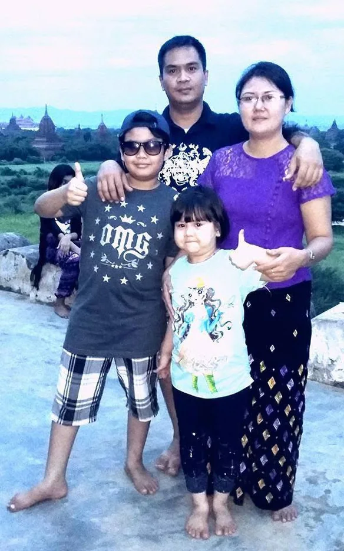
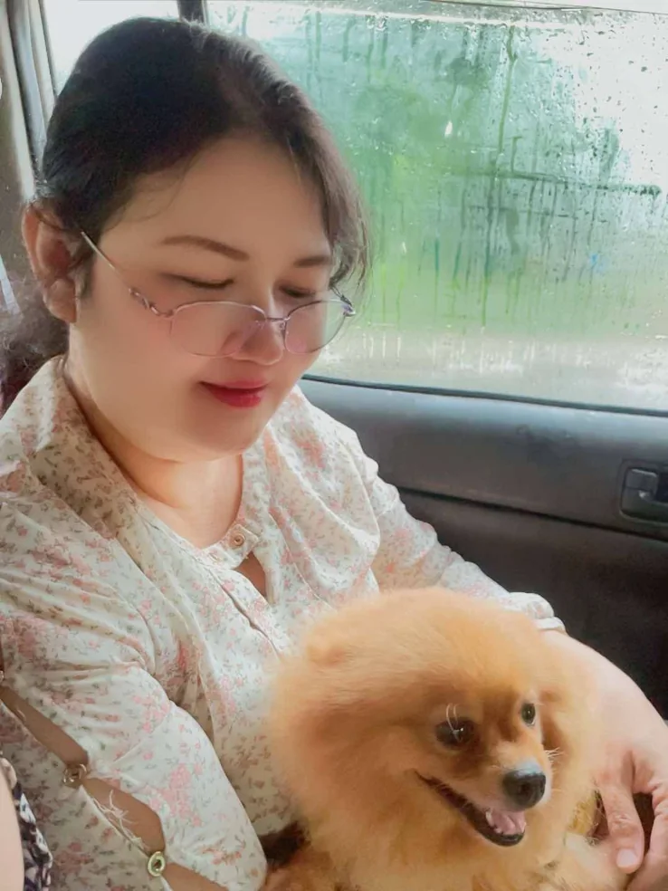
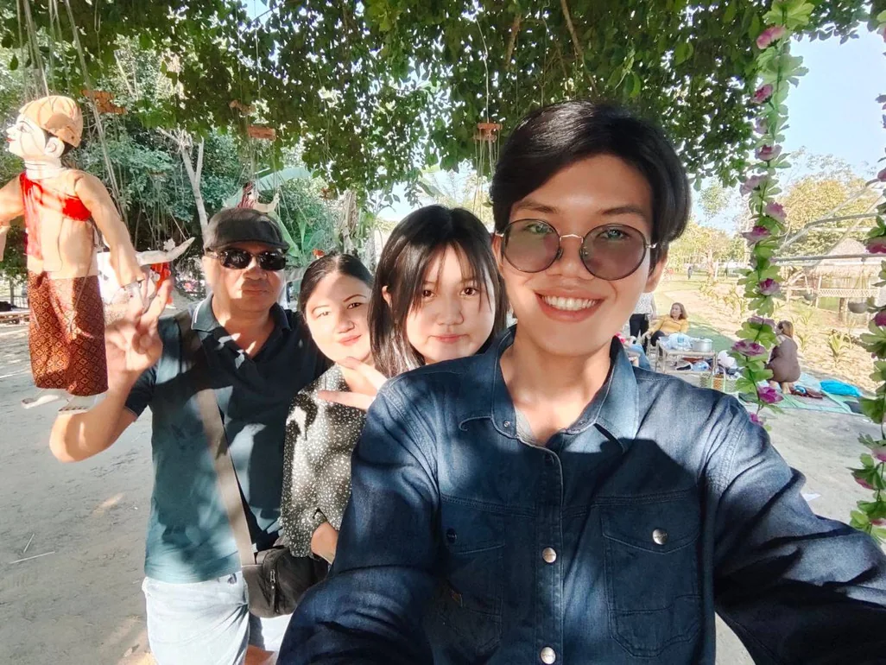

Happy Birthday,
Mom
I may be far from home today, but my heart is still there with you.
Open my letterMom,
I wish I could be there with you today.
I miss the ordinary days when being together was so easy.
The older I get, the more I understand how much you have done for me.

Even now, when I think of home, I think of you.
Being away has made me realise how much I miss the little things.

If I do not call enough, it is never because I do not miss you.
Sometimes it is because I miss you too much.
When I see you on a video call, for those few minutes I feel like I am home again.
I can see your face.
I can hear your voice.
And for a moment, the distance disappears.
But when the call ends, everything becomes quiet again.
Sometimes I miss you even more than before.
Please never think that I have become cold or forgotten about home.
I have not.
I am proud of you, Mom.
Thank you for every sacrifice you made for me, including the ones I was too young to understand.
Thank you for supporting me, for loving me, and for caring about how I am doing, even when I am slow to reply.
I know your concern comes from love. I may not always say it well, but I carry that love with me every day.
There are still so many things I want to achieve.
And there are still so many things I want to give back to you.
One day, I hope I can make you feel that every sacrifice you made for your son was worth it.
Even on the busiest days, a part of me still wants to come home.
To sit beside you.
To eat together.
To talk about ordinary things.
And to feel like your little boy again.
Happy Birthday, Mom.
I love you more than I probably know how to say.
And I miss you more than I usually show.
Until I can come home
Please stay healthy.
Please keep smiling.
Please do not worry about me too much.
And I will come home to you.

Happy 51st Birthday, Mom.
I love you.